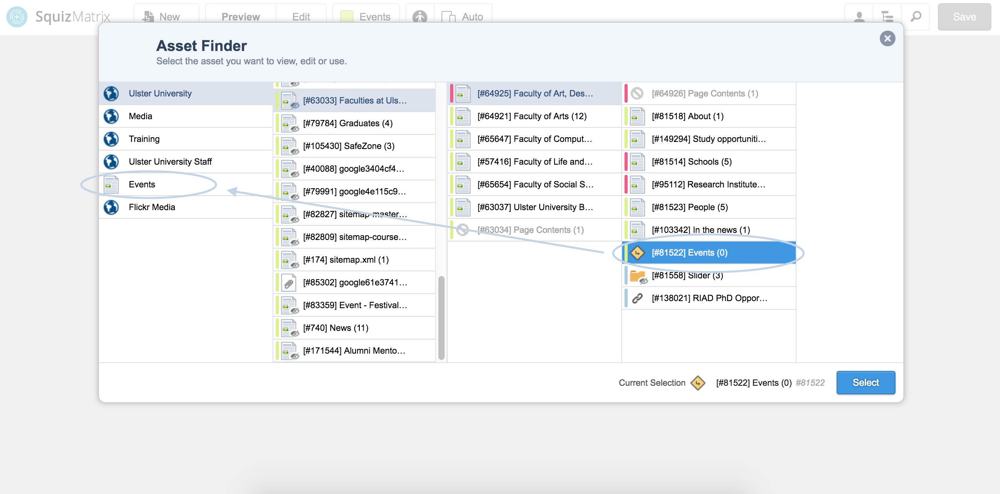

Five
Changes

Something I've noticed since starting my placement is that things can change very quickly. Despite being in meetings and told that something should be done a certain way, two weeks later it's been completely changed. In the short time that I've been here I have learned that it's so important to be adaptable - especially in this industry. So with this change came a new task; migrating all faculty events in each of the schools from school level to events level inside the Assets Finder in the CMS. Relatively simple, but time consuming because quite a lot of minor details had to be changed to reflect the file's new location.
As it is the last week in October, I was given the full week to complete this task because it was one of the 'loose ends' that needed sorted before moving on. Once I finished this I had some down time which meant I was able to get some work done on my portfolio redesign and do some reading. I had seen a few articles on how Keynote can be used to prototype, so I set learning this as my task for the end of the week because I want to make sure to use any downtime to learn some new skills myself during this placement year.
Placement Journal
Paige Boyd